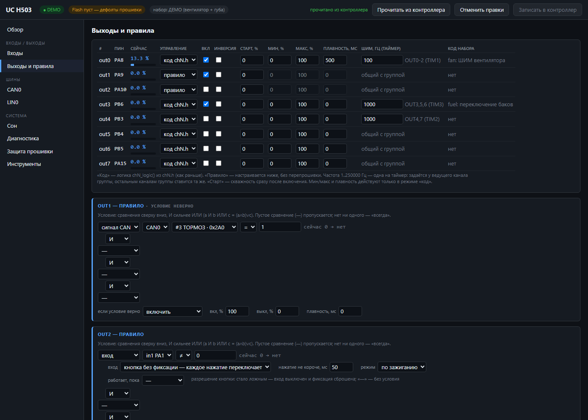
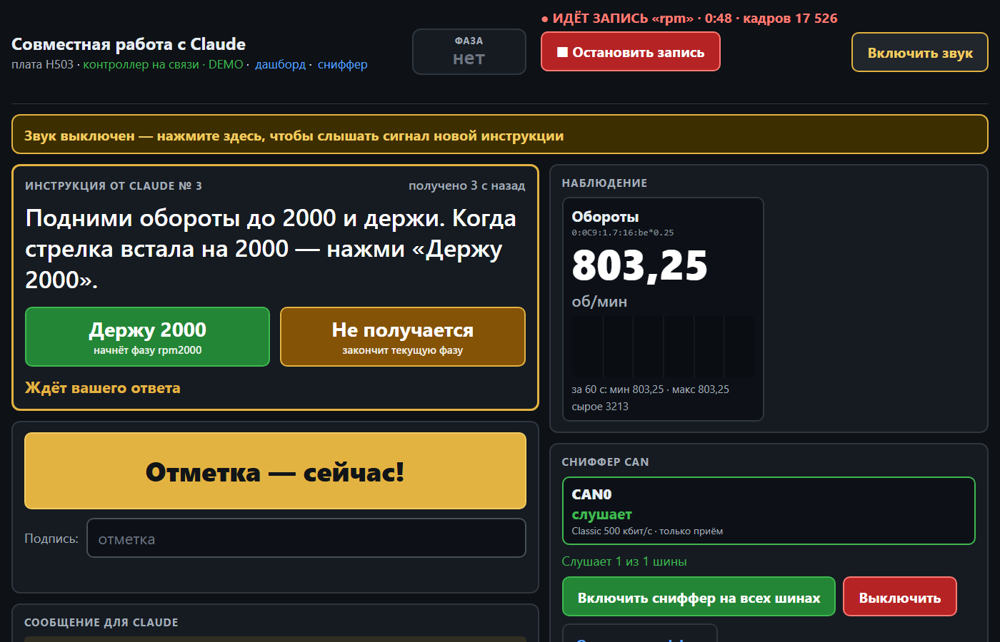
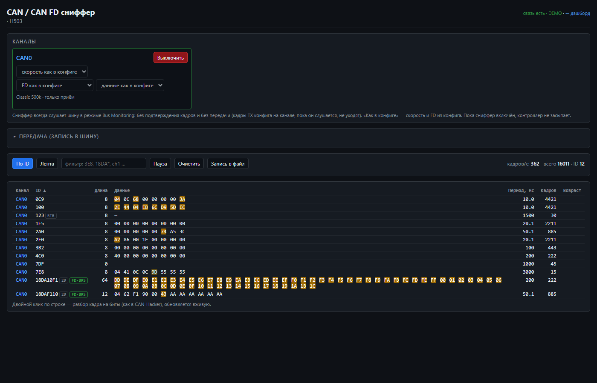
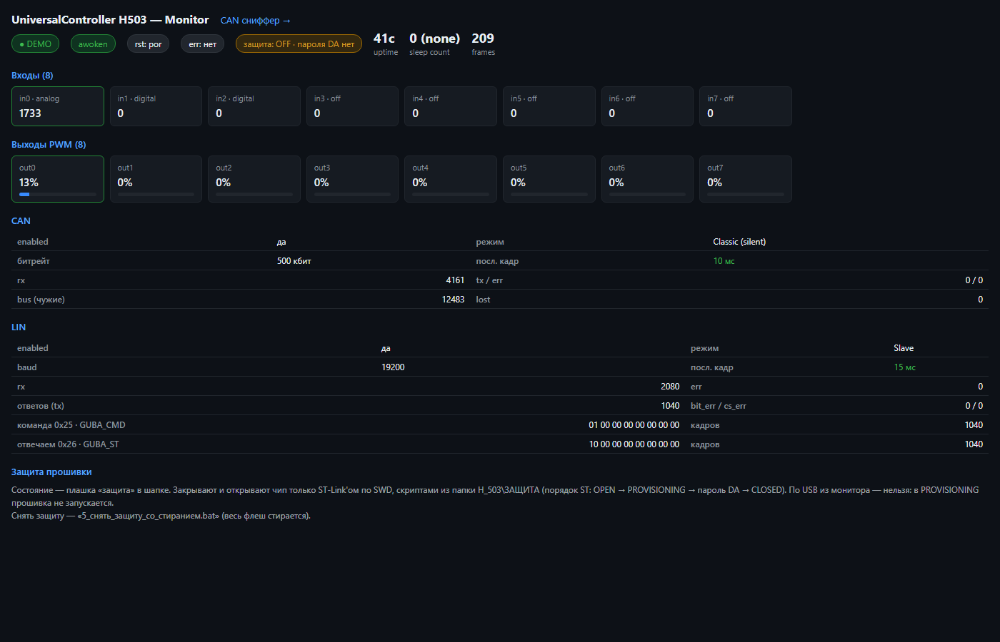

Контроллер CAN FD / LIN для доработок автомобиля: читает сигналы шины и управляет нагрузками по вашим правилам. Настраивается в браузере, программировать не нужно. Внутри сниффер, а поиск сигналов ведёт Claude.




| Плата | Шины | Выходы | Входы | Для чего |
|---|---|---|---|---|
| H503 | 1 × CAN FD, 1 × LIN | 8 (ШИМ) | 8 | типовые доработки на одной шине, компактно |
| G4 | 3 × CAN FD, 2 × LIN | 12 (ШИМ) | 8 | несколько шин, диагностика UDS, сложные проекты |
| H723 | 3 × CAN FD, 2 × LIN | 12 (ШИМ) | 8 | то же с запасом по мощности |
Проверено в реальных машинах: RAM 1500 / TRX (ДХО из поворотников через UDS, ролета, вентилятор), Toyota Tundra (переключатель баков), Nissan Patrol (перекачка из дополнительного бака), узлы LIN.
Платы поставляются прошитыми, с инструкцией. Ссылки на магазины появятся здесь по мере открытия витрин.
Пока вопросы и заказ: через Issues репозитория. Укажите плату, марку и год машины и задачу, подскажем, подойдёт ли и какие сигналы понадобятся.
Контроллер предназначен для дополнительного оборудования. Цепи безопасности (подушки, ABS, рулевое, тормоза) не поддерживаются. Установку выполняет специалист по автоэлектрике, питание через предохранитель.
Программа-монитор для Windows (обзор, настройки, сниффер, совместная работа) и плагин для Claude Code лежат в
открытом репозитории github.com/ayvengo61/uc-can-hunt.
Установка плагина: /plugin marketplace add ayvengo61/uc-can-hunt, затем
/plugin install uc-can-hunt@uc-tools. Для работы с Claude нужны Claude Code (платный план Claude Pro/Max
или оплата через API) и Python; остальное работает без них.